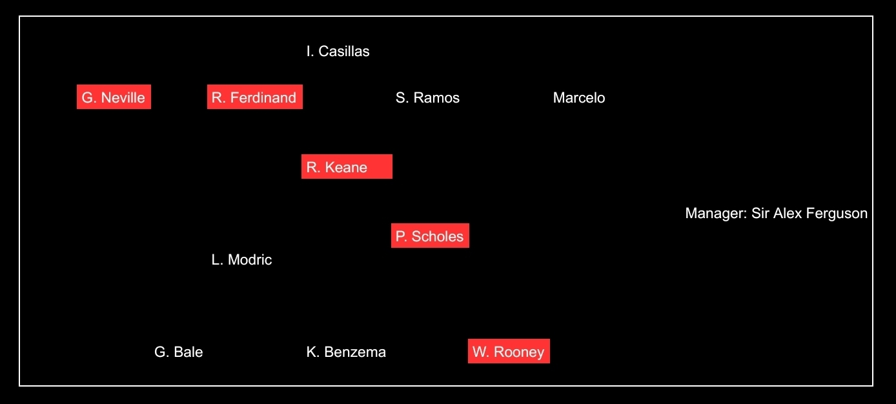
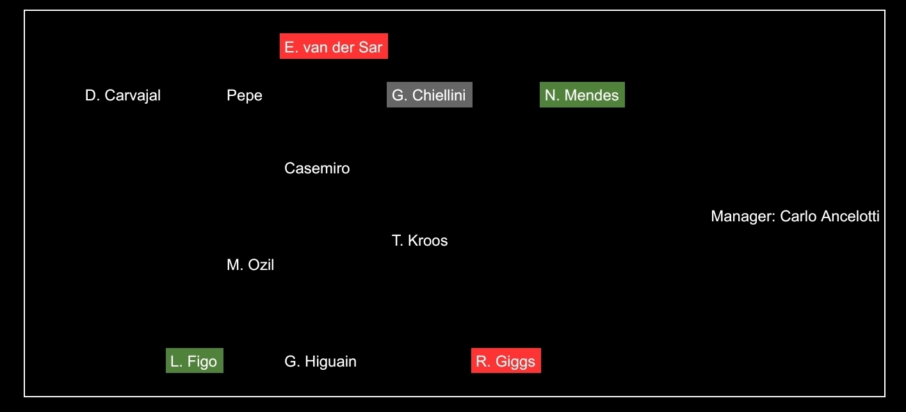
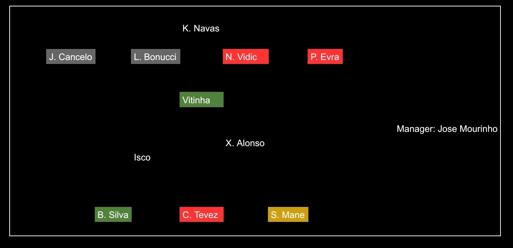
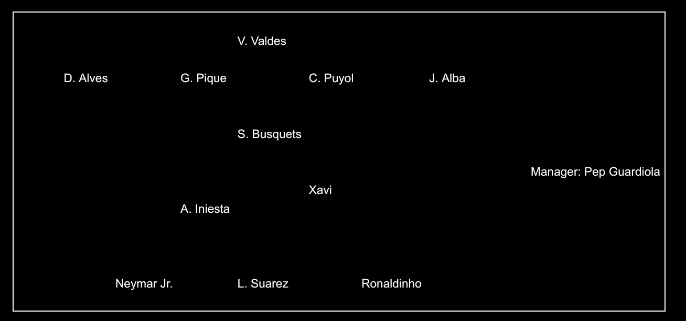
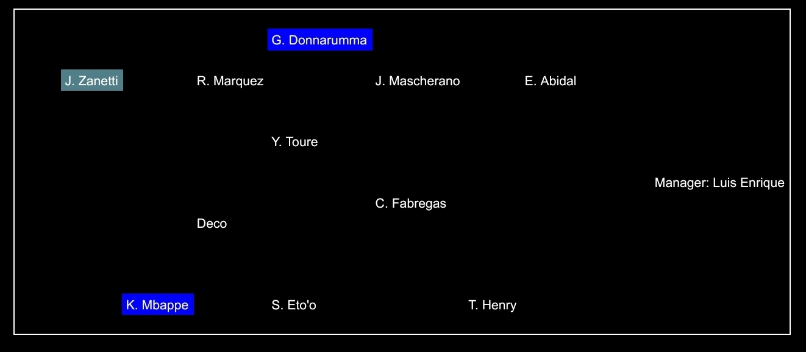
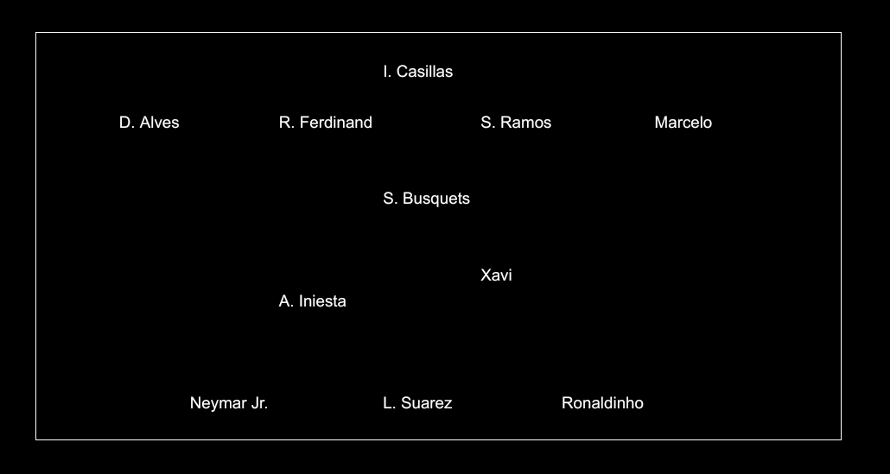

I recently discovered this website describing chess variants and their fascinating histories. Check it out!
Let me share a chess variant I thought of recently. It's inspired by the latest developments in the chess world regarding cheating and computer engine use/misuse.
The rules are very simple, don't worry. Start with classic (Western) chess and add in the power of modern computer engines. Specifically, each player may request the objective (true) board evaluation once during a game. Only the bar is shown — not the top engine move or corresponding line!
You might ask: how does that help? Firstly, if a position is objectively winning for you with the correct sequence of moves, you normally might not even attempt to find it because of carelessness or errors in your assessment of the position. On the other hand, if a position appears to be lost for you, you normally might give up hope and concede. But if you have retained your extra lifeline of computer assistance up to this point, you can be rewarded with the information that there indeed exists a resource you have yet to discover. This new rule rewards players once per game for their intuition and awareness (sensing opportunity or danger).
Of course, it is very difficult to use effectively. Who knows when the optimal time is to rely on the lifeline? Inaccuracies, mistakes, and serious blunders can occur very unexpectedly and sometimes can be very hidden.
I fell in love with the game while watching Cristiano Ronaldo in the early 2010s.
Over the last two years, I have begun to notice a big difference between Lionel Messi and Cristiano Ronaldo. Across an entire 90-minute game, Messi appears to be much more influential due to his excellent dribbling and passing. Ronaldo remains ruthlessly effective from a goal-to-game ratio perspective; however, his overall play has noticeably declined. As a result, you can accurately judge Messi's performance in real-time; conversely, you can only judge Ronaldo's performance once a match ends (since it largely depends on whether he scores). The 2026 FIFA World Cup will prove the ultimate litmus test for their current levels.
In their primes, Messi was perhaps better in terms of technical ability (especially due to his low center of gravity). Ronaldo's play always felt exhilarating and explosive (“box-office”); Messi's play was so brilliant that I was often left bewildered. I still preferred watching Ronaldo because he appeared to perform best in decisive moments, particularly in the UEFA Champions League. Ronaldo was undoubtedly the better natural goalscorer and a severely underrated playmaker. Prior to his significant injury in 2014, Ronaldo was also a tier-1 dribbler.
Based on footballing talent, Ronaldo is likely among the top 20 players ever. Messi is among the top 3! Messi has a unique style. Unlike other tremendously skillful players, like Ronaldinho, Neymar Jr., or Cristiano Ronaldo, Messi doesn't showcase skill moves regularly. His ball and body control is so otherworldly that tricks are unnecessary!
Based on match-winning capability, I'd argue that Ronaldo and Messi are neck-in-neck and both are clearly the best ever.
If I were to draw comparisons to anime characters, Messi is like Sasuke. Ronaldo is like Naruto. Or, Messi is like Kakashi and Ronaldo is like Might Guy.
To wrap up, I wanted to rank Messi and Ronaldo (at their respective peaks) in 4 categories: dribbling, playmaking, goalscoring, and clutch moments. Here are the results.
Messi scores 10/10 in dribbling and playmaking, while Ronaldo scores 9/10 in dribbling and 8/10 in playmaking. Ronaldo is 10/10 in goalscoring, while Messi scores 9.5/10 in this category. Ronaldo also scores 10/10 in clutch moments, while Messi scores 9/10 here.
Both players are fabulous! In my opinion, their story goes like this ...
In 2012, Messi was unanimously regarded as the better player. By 2018, Ronaldo had made a strong case to usurp the throne and was regarded as the better player by many. By 2023, Messi had cemented his legacy and GOAT status in the eyes of most after a terrific 2022 FIFA World Cup triumph! The question is: will there be more chapters in this storybook? Perhaps, Ronaldo reaches 1,000 career goals? What if Messi and Argentina defend their FIFA World Cup crown? Could Ronaldo and Portugal capture their first FIFA World Cup trophy instead?





It's fascinating to compare the Ronaldo and Messi's best teammates. Looking at the two gold teams, Ronaldo has clearly played with better defenders (except D. Alves). However, Messi has enjoyed the company of better midfielders and attackers. There are three debatable positions: LCB, CDM, and ST. I'll go with Busquets over Keane, Suarez over Benzema, and Ferdinand over Puyol/Pique.

Ronaldo operated at a Ballon d'Or level from 2007-2021. He was also very good between 2022-2024. Ronaldo won four of the five Ballon d'Or awards between 2013-2017 and was considered a major snub in 2018 too. This followed a period of dominance (2009-2012) during which Messi collected four consecutive Ballon d'Or awards!
Ronaldo N. (R9) perhaps has the best case to enter the GOAT conversation. People who watched him burst onto the scene as a prodigious teenager say R9 was by far the best. He was a unicorn: dribbling based primarily on body feints (akin to Messi) and explosive pace and power (akin to CR7). But there is also the unfortunate reality: he had a very short peak. This ultimately prevents him from sitting at the table with Pele, Maradona, Messi, and CR7. But comparing players only at their respective peaks, R9 was arguably at the same (if not slightly higher) level as the 21st century heroes! He was a pioneer (emerging before Messi and CR7) and showcased his ability against some of the finest defenders in history (in the Italian Serie A of the 1990s).